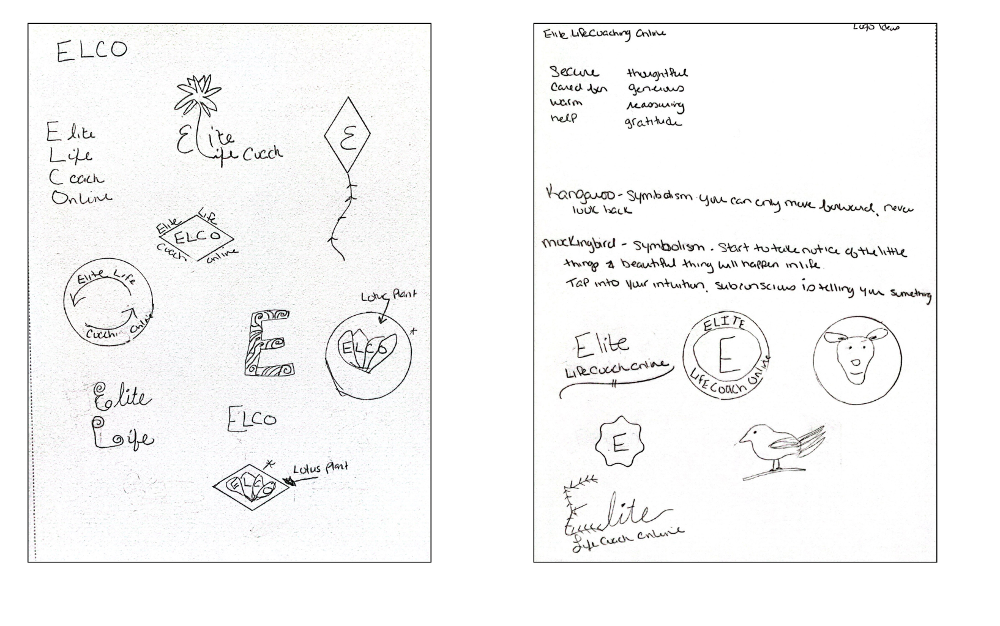

Elite Life Coach Online is a new local business looking to launch in the spring of 2022. They are a professional life coach company that helps individuals clarify and achieve their goals and dreams by identifying the obstacles that hold them back.
The owner contacted me to design a responsive website, create a logo and brand identity so she can start to promote her new business to friends, family and colleagues before the official opening.
Prior to starting research on this project, I had to understand what the client’s business goals and needs were for the website to be successful, and gather information on what she envisioned for her logo and brand style.
During the hour long call I was able to learn more about who she thinks her users are, website goals / key features, and brand style inspiration. Based off this information I was able to establish these main goals for the client.
In order to understand what potential clients looked for when seeking guidance of a new life coach, I created a survey to gain more insight on the following areas:
I recruited 16 participants from social media and specialized networks. The results uncovered some similar responses and information in regards to what’s important while searching for a new life coach.
| 93% | 62% | 56% |
|---|---|---|
| Review client testimonials | Know what life coach does | Prefer a local life coach |
Life coaching practices have been around since the 1980’s and have been growing in popularity ever since. As lives become more demanding in both personal and professional aspects, many people seek out a life coach for guidance. Incorporating the knowledge and experience of a Life Coach may be beneficial to get an outsider's point of view on a current situation providing new solutions to the problem.
Based on the survey results, I took a deeper look into 4 local Life Coach Companies. I compared what they offered, who their target market is, how they are similar to one another, and what are the main differences. Listing out their strengths and weaknesses will provide me with the information to create a website that stands out against the competition. Let's take a look!
 View Full Analysis
View Full Analysis
| As a User | As a Business Owner |
|---|---|
| I want to find out what services are available to me and to know how much this costs | I want to have my services listed and explained what is included |
| I want to learn about what a life coach does | I want to teach clients about what I do |
| I want to see current availability and sign up for an appointment | I want to have my calendar availability current and able to book appointments |
| I want to make a payment | I want to have clients make payments online |
| I want to learn about the life coach and their experience | I want to share my story so my clients can get to know me better |
| I want to read client testimonials | I want clients to share their stories and accomplishments |
| I want to contact someone to answer my questions | I want to be notified when someone is viewing my site so I can respond to |
| I want a site that is optimized for multiple devices | I want to have a site that is optimized for all devices |
In order to really understand our user and relate to their goals and frustrations I created Eric Hamilton. He represents a user that would be ideal for my client. He’s a busy professional looking for guidance in his career and needs help setting goals to achieve them.

I created a Site Map to help visualize what pages I would need to define and also get a better understanding of the structure of the site.

After reviewing the site map and user stories, the majority of the use flows were straight forward and didn’t require mapping out. I decided to focus on the sites 3 main task flows that the client was looking to accomplish on the site:


To get a better understanding of the client's design style, I sketched out different variations of the main pages for her website. She was shown both the desktop and mobile versions so she could see how the layout is viewed on different devices. The sketches were well received and after some discussion, she selected the layouts for the design. The sketches outlined in gold are the client's choices that will be used moving forward in the project.


I digitalized my sketches into mid-fidelity wireframes to get a better understanding of how these would look and to make sure I wasn't missing any key elements of the design.


It was time to test the structure of the site. I conducted the user testing session with 4 participants. They met the requirements for the persona, ages ranged from 30’s to late 40’s and were familiar with what a life coach does. The tasks were focused on the 4 main goals of the site. For the purpose of this testing session, I didn’t complete the full lifecycle of the booking process. This was just to see if the users were able to find the information.
Overall the testing session went well with a success rate of 94%. The participants were able to complete task numbers 2-4 with no errors or confusion. However, the first task proved to be very problematic for 3 of the users.
Only 1 out of 4 users were able to locate the information on what a life coach does without any errors. 2 users clicked on “Services” page and 1 clicked on “About Me” page. After those attempts failed, they all found the information on the bottom of the ”Home” page.
After speaking with the users, I discovered that the reason they all left the home page was they didn’t think there was any more information after the “Let’s Talk” CTA button. It didn’t occur to them to try to scroll down, they just saw the other links and selected the “Services” or “ About Me” pages to try to find the information they were looking for.
Overall I think the testing went well, the 4 participants were able to complete all the tasks even after the initial slip ups of the first task. The 2nd and 3rd tasks were competed without any errors or confession. Before moving to the High Fidelity I’ll focus on reworking the home page so the users can tell there’s more information below the CTA button. This might be done by shrinking down the image, adding in an indicator such as an arrow or moving up the next section so it shows above the fold.
It was time to create a logo for this new company, keeping in mind the clients vision and keywords I sketched out a few ideas to review with the client during our next meeting.
While reviewing the logo ideas, the client decided the Lotus plant was the best icon to represent her company. She gave me a few images that inspired her and asked to incorporate the golds, blues, and neutrals into her branding and website. I designed some additional logos featuring the Lotus plant for feedback and incorporated the colors she requested in our meeting.
I selected 3 font pairings for the client to choose from, being mindful of the feel of the site, who the site is for and ensuring clear readability on smaller font sizes and different devices. The client decided on Style 3, Helvetica as she liked the look of just 1 font throughout the whole site.

I created a style tile for the client to review the information we discussed before I started on the Hi-Fidelity frames. These key elements will help bring the screens to life as we incorporate the details to each screen.

As I moved into designing the Hi-Fidelity frames, I referred to the Mid-Fidelity user testing results and updated the errors that were preventing the tasks from being completed successfully. I then started with the mobile screens and utilized the style tile to ensure my designs matched what the client had approved.


Five users participated in the testing of the website, with ages ranging from mid-30s to early 60s. All users tested the desktop version of the site. The testing lasted approximately 20 minutes and all 6 tasks were successfully completed by all users.
This round of testing was successful as all participants were able to complete each of the tasks showing a 100% success rate. However, there were some repetitive comments from 4 out of 5 users about the lack of information for each package. While this didn’t directly effect the end result of completing the tasks, it did raise some concerns as to if people would book appointments due to minimal content. Another request was adding the word “home” to the navigation bar as they forgot the logo was the linked to the “home” screen.
After speaking with each of the participants I learned that despite the errors mentioned above, they liked the website. Overall it was easy to understand, the images and colors were inviting, the content was easily scannable which was nice for quickly looking for information. The main concern that would delay booking a package was the lack of information on the services page.
The testing sessions went well, with all 5 users easily completing the 6 tasks, demonstrating the website's user-friendliness. However, improvements are still needed. To address this, I'll collaborate closely with the client to gather detailed package information, reducing potential client booking hesitations. Additionally, based on testing feedback, I'll add "home" to the navigation. I used an affinity map to analyze and prioritize feedback, identifying common themes and distinguishing immediate action items from those requiring owner discussion.
Design iterations based on user testing and client feedback. The left design shows the "before," and the right shows the "after."

With the updates completed, it’s now time to meet with the client to show her the final designs. She’ll explore her website via the prototype to get the full experience. Once she’s signed off on the design, we’ll move into the development of the website. I’ll then walk the client through how to update her site with images, text, and any basic changes she may need as she expands her business.
I like to give my clients a chance to explore the new site on their own, ensuring everything works correctly without the pressure of a meeting. This allows them time to learn how to update website features and get answers to questions as they come up.
I’ll schedule the check-in meeting for 3-4 weeks after the site is live, allowing time for some site traffic and the client to get comfortable making changes to the site on their own.